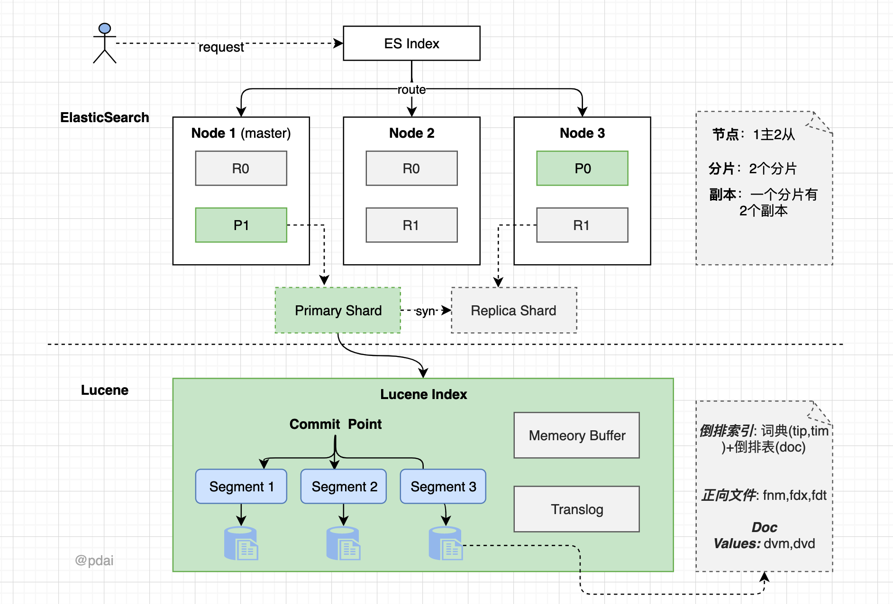

ES集群存储

宏观
集群由一系列node组成，每个node由分片组成，每个es索引index由分布在不同node里面的多个分片组成。每个分片也就是shard，就是lucene索引
当一个请求到达一个node时，这个节点就称为上帝节点，根据索引信息，判断请求会被路由到哪个核心节点，以及那个人副本时可用的等信息，在执行搜索前，会讲query语句转化成lucene语句，
微观
每个lucene索引里面有很多的segement，可以看作mini-index
每个segment里面有很多数据结构，例如
- inverted index（倒排索引）
- 倒排索引包括两部分， 一个是有序的数据字典（包含单词term和它出现的频率），另一个是单词对应的位置，也就是文件id
- 当搜索时， 先对搜索内容进行分解，然后在字典里面找到对应的term，从而查找到与搜索相关的文件内容
- 所以对于包含查找，搜索成本很大，因为需要遍历倒排表，例如
*休闲鞋这样的查找,需要做一些优化
- stored field
- 为了包含特定字符串的查找
- document values
- cache
- lucene会尽量缓存，例如会缓存filter条件本身缓存，但是不会对queries缓存（我理解时分词后的query），需要应用自己缓存
搜索发生时，lucene会搜索所有的segment，然后把每个segment的搜索结果返回，最后合并返回
segment时不可变的，删除时设置标识位，更新时先删除再创建数据
- lucene会尽量缓存，例如会缓存filter条件本身缓存，但是不会对queries缓存（我理解时分词后的query），需要应用自己缓存
ES持久化
对于es的写操作
- 会根据文档id路由到合适的分片
- 对应分片收到来自协调节点的请求后，会将请求写入内存缓冲区，然后定时（默认1s，refresh_interval指定）写入文件系统缓存中，这个过程是refresh
- 为了防止意外情况下上述两个系统的数据丢失，es通过translog的机制来保证数据是可靠的，具体的机制是，当接收的请求后，同时写入translog，当从文件系统缓存中写入磁盘后，才会清楚掉，这个过程较flush
- flush过程中，内存中的缓冲将被清除，内容写入一个新段，段的fsync将创建一个新的提交点，将内容刷新到磁盘，旧的translog将删除并开始一个新的，flush的时机时定时触发（30min）或者translog变得太大时。
- 未执行refresh时，数据还没有到达segment，所以搜索是搜不到的，但是通过文档id可以查到（从translog）
值得注意的点
- lucene不保证数据的安全，都是由es使用translog保证
- es写入之后，会向所有副本同步写入，所有副本都写入才算成功
读取
对于es的读操作
getById
- 客户端向node发送获取请求
- node根据_id确认分片，分片的副本存在与所有的三个节点上，如果路由到别的节点，查询结束后，会将结果返回给node再返回给客户端
- 处理读请求时，会轮询副本达到负载均衡
- 文档被检索时，可能主分片的数据还没有同步到副本，但是如果主分片返回了数据，代表同步已经结束
search
- 如果有自定义路由的话，会路由到对应的分片
- 初始查询的时候，查询会广播到所有分片，每个分片在本地执行搜索并构建一个匹配文档的大小from+size的优先队列，
- 每个分片返回各自优先队列中的所有文档id的排序和协调节点，该节点合并自己的优先队列中来产生一个全局排序的结果列表
- 协调节点辨别出哪些文档应该被返回，然后返回给客户端
值得注意的点
- 所有的搜索都分为两阶段，第一个阶段查询匹配到的文档id，第二阶段再查询对应的完整文档
- getById是实时的，search不是，前者会查询translog的值，后者只会查询文件系统缓存中的值，所以只有当refresh后才可以查询到。
数据并发冲突
- 所有操作都会更新版本号，删除也会，软删除。更新操作为删除后，新建一个文档
- 搜索时，如果带上版本号，则会检查是否是最新的版本号，如果没有带，则会先读取最新的，然后再读取，进行一个cas
es选举
这里说下7.x的raft协议的选举
介绍
正常情况下，集群中只有一个leader，其余都是follower，follow只是被动的接受请求，不发送请求。
引入term任期的概念，每个任期前先进行选举阶段，然后选出一个leader，一个任期只有一个leader，任期结束后，再次进入选举阶段。
es实现
es中，每个候选人先不投自己，直接发出requestVote，节点可以投多票，对于平票的情况，es选择让最后当选的称为leader，实现的话，就是当有节点收到集群一半以上的票时，发送消息告诉自己当选，如果它再收到投票信息，则主动退出，让后续节点当选。